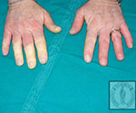
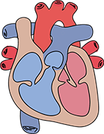

Module: Scleroderma: Basic Overview
Elaine A. Furst, RN, MA, Janet L. Poole, Ph.D., OTR/L, Cindy Mendelson, PhD, RN, Dinesh Khanna, MD, MS
Resources
The link below provides more information on how scleroderma affects the body:
http://www.scleroderma.org/site/PageServer?pagename=body_tool#.VYG3i7lVg5h
How does scleroderma affect the body?
Many people with scleroderma go from physician to physician looking for a correct diagnosis. The signs and symptoms of scleroderma can be mistaken for several other diseases, depending on the most obvious symptoms at the time of examination. People receive numerous referrals to specialists to examine individual body systems. They may have gastric tests for heartburn or tests for kidney problems. Many people are referred to mental health providers because a specific diagnosis cannot be confirmed, despite all the symptoms. Finally, scleroderma can affect people very differently. Though each person may experience symptoms differently, there are several patterns of symptoms that can lead to a suspicion of scleroderma. The next section describes the symptoms of systemic scleroderma by body system.
If you would like more information on how scleroderma affects the body, click on the link below:
http://www.scleroderma.org/site/PageServer?pagename=body_tool#.VYG3i7lVg5h
Blood Changes
Most rheumatologists do blood tests to see if you have the antibodies associated with systemic sclerosis. Approximately 95% of people with systemic scleroderma have a positive antinuclear antibody (ANA) test, but so do people with other autoimmune diseases (97% of people with lupus, as an example).
People with localized scleroderma usually have negative ANA. The ANA test also helps determine which kind of scleroderma you have or are likely to develop based on your blood tests. There are 3 main antibodies in systemic scleroderma. These are:
- Serum anti-topoisomerase, also known as SCL-70, is specific to diffuse scleroderma (and the test is positive in 20% of people with scleroderma). Two-thirds of patients with this antibody have diffuse scleroderma. They also have pulmonary interstitial fibrosis and reduced survival. If you have this antibody, ask your doctor to test you for lung fibrosis and to carefully monitor you for getting fibrosis or progression of lung fibrosis.
- Anticentromere antibody, also known as ACA, is present in people with limited scleroderma (and the test is positive in 20% of people with scleroderma). People with limited scleroderma have a low frequency of lung, heart, and renal disease. But up to 30% of this subgroup may have the serious complication of pulmonary arterial hypertension.
- Anti-RNA polymerase III antibody (seen in 20 %of patients with systemic sclerosis), is specific to diffuse scleroderma and development of renal crisis and severe skin fibrosis.
This means that about 40% of people with systemic scleroderma don’t have any scleroderma specific antibodies that can be measured commercially.
Skin
A common symptom of scleroderma is swelling, thickening, and tightening of the skin over the fingers. This can progress to the hands, arms, legs, and body and can occur over weeks to months. Early on, the disease can be diagnosed as rheumatoid arthritis or lupus. Antinuclear antibody (ANA) is present in approximately 95% of patients with systemic sclerosis. The skin can be very itchy and dry. The tight skin feels hard to the touch. Over many years, the skin will feel less tight, although it will still feel attached to the underlying tissue. This is called “hidebound.” Not all people have all of these phases or go through all stages.
Vascular (Blood Vessels)
The first symptom for many people with scleroderma is Raynaud’s phenomenon of the hands and/or feet. Raynaud’s involves coldness, numbness, and white color of the affected fingers, toes, earlobes, or nose due to a spasm of the small blood vessels. This is often followed by a bluish-purple color and then painful redness and swelling. Raynaud’s occurs in 95% of people with systemic scleroderma and also occurs in many other autoimmune diseases. Feeling cold without color changes is not Raynaud’s phenomenon.
Musculo-skeletal (Muscles and Bones)
Almost all people with scleroderma have some joint pain or stiffness, often without swelling or redness. The pain may be caused by the tightening of the skin over the joints or by arthritis. In some people with scleroderma, the joints lose motion and do not straighten fully. In aggressive disease, people may develop large joint (elbows/knees) contractures. Stretching and range-of-motion exercises may help keep joints moving (see Module on Exercise).
In addition to specific information on how scleroderma affects African Americans, the module on African Americans contains more in-depth information on muscle disease that is important and applies to everyone with scleroderma who has muscle disease.
Gastrointestinal (GI) Involvement
About 75% to 90% of people with scleroderma have GI involvement. They may have symptoms of gastroesophageal reflux (GERD). These symptoms include heartburn, difficulty swallowing, nausea, vomiting, and bloating after meals. In some people, other parts of the GI tract are affected, causing diarrhea and/or constipation.
In some people, the stomach can have telangiectasias, which means that dilated blood vessels line the wall of the stomach. This is called “watermelon stomach” because of the striped appearance of the lining of the stomach. Bleeding from these blood vessels can cause anemia and/or fatigue.
There may also be other symptoms of GERD, such as mouth ulcers, chronic cough, asthma, and, most severely, aspiration pneumonia (pneumonia caused by food or liquids going into the lungs instead of the stomach). These can be treated or controlled with appropriate medications.
Dry mouth is also a frequent symptom. It often results in severe dental problems and yeast infections in the mouth that may be painful and may affect taste. The skin tightness also causes difficulty in getting adequate dental care because the mouth becomes smaller and cannot be opened widely (see Module on Mouth and Teeth Care).
Pulmonary (Lungs)
Inflammation of the lung sacs that exchange oxygen and carbon dioxide, is common. This can be a serious complication of scleroderma. Inflammation can lead to pulmonary fibrosis (scarring of the lungs) and restrictive lung disease. Pulmonary fibrosis occurs in 70% to 90% of people with scleroderma. Pulmonary fibrosis usually occurs within the first 3-5 years of disease. Not every patient develops severe pulmonary fibrosis and regular lung functions tests can determine who needs treatment. NOT EVERY PATIENT REQUIRES IMMUNOSUPPRESSIVE THERAPY.
It is important to get regular lung function tests (3-4/year) for the first 2-3 years in early disease. This is very important if you have diffuse scleroderma or have certain blood tests such as anti-SCL70 (anti-topoisomerase antibodies or nucleolar pattern) on your ANA.
Some people with scleroderma develop pulmonary arterial hypertension (PAH). PAH is high blood pressure in the arteries that move blood from the heart to the lungs. The heart has to pump harder. Symptoms range from coughing and shortness of breath (SOB) on exertion to SOB at rest, with need for continuous oxygen.
It is recommended that baseline pulmonary function tests (breathing tests) and echocardiograms (heart function tests) be done soon after you have a diagnosis of scleroderma. After that, experts recommend yearly pulmonary function tests and echocardiograms. Although you may eventually develop PAH, earlier diagnosis is associated with better outcomes, especially with FDA-approved medications.
In addition to specific information on how scleroderma affects African Americans, the module on African Americans contains more in-depth information on lung disease that is important and applies to everyone with scleroderma who has lung disease.
Cardiac (Heart)
Cardiac disease can occur in the heart muscle (myocardium) or in the heart covering (pericardium). Electrical system, or heartbeat, problems can also occur. Difficulty breathing with activity and palpitations (fast, irregular heartbeat) are among the most common symptoms. Early diagnosis is important to find out if people are developing these problems. An echocardiogram is helpful in screening for this involvement. An electrocardiogram and echocardiogram are recommended in every patient at the time of diagnosis. Yearly echocardiograms are recommended for every patient.
Renal (Kidneys)
Scleroderma renal crisis is a sudden and very high rise in blood pressure, a decrease in urine output, or no urine output. People are more likely to develop scleroderma renal crisis early in the disease if they have diffuse scleroderma with skin thickening on the chest and from the elbows to the shoulders, especially if they have RNA polymerase 3 antibody. One in four people with this positive (+) blood test, are affected by renal crisis. Early and aggressive treatment with a certain type of medication to reduce the blood pressure quickly is extremely important to prevent permanent kidney damage.
If you have systemic scleroderma you should take your blood pressure (BP) 3 times a week, especially early in the disease. You should keep a blood pressure log. Any significant changes in blood pressure should be reported to your health care provider. Generally, if your BP increases by 15-20 points (systolic or diastolic) with or without symptoms you should contact your doctor. The blood pressure log should be brought to all doctors’ appointments (see Module on Emergencies).
Neurological (Nerves)
Neurological problems are rare in people with scleroderma. Carpal tunnel syndrome and entrapment of the ulnar nerve occur in a small percentage of patients. These are usually seen early in the disease.